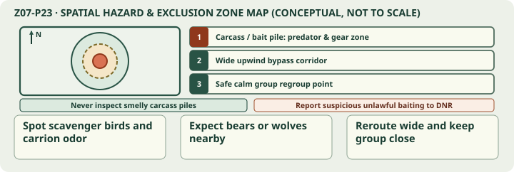

Z07-P23 · Traps and snares · New manuscript
Carrion, Bait Sites and Secondary Predator Encounter Avoidance
Recognize carcass dumps and scent-bait stations as multi-hazard zones attracting bears, wolves, and scavengers.
When it applies · Backcountry and rural trail travel where carrion or scent attractants are encountered.
Equipment · Bear-safety awareness, short pet leash, alternate route plan.

Actions
- Treat concentrated ravens, crows, magpies, fresh bone/hide piles, or strong rotting odor as an immediate alert that a large carcass or wildlife attractant lies nearby.[L12, H12]
- Understand that bears and wolves frequently defend fresh carcasses fiercely—and legal or illegal capture hardware can also surround bait sites on multi-use lands.[L12, H12, H13]
- Keep children and leashed pets tight, make calm voice noise, and detour widely upwind around any suspected carcass or bait pile.[L12, H12]
Failure recognition · Walking off-trail to inspect a smelly carcass pile surprises feeding bears or walks dogs into surrounding hazards.[L12, H12]
Verify · Party detours wide around carrion odor and circling scavengers without investigating the pile.[L12, H12]
Stop or change course · Stop advancing immediately and retreat calmly if fresh bear/wolf tracks, growling, or agitated wildlife appear near carrion.[L12, H12, H13]
Evidence and editorial notes
- H12 · Minnesota DNR · Living with Black Bears and Encounter Safety (Current web edition)
- Section: Black bear encounter avoidance and attractant control · Conditions: Campsites, fishing shores, and trails in bear range
Support: Store food, fish waste, and scented items securely; make calm noise in thick cover, back away slowly without running, and never approach cubs.
Limitations: Bear behavior varies with habituation and food stress; carry and know local bear-deterrent rules where appropriate. · Conflicting evidence: None noted.
Editorial note: Core Z06 wildlife encounter avoidance. · Specialist reviewer: Wildlife conflict specialist
Primary source · checked 2026-11-25 - H13 · Minnesota DNR · Gray Wolves in Minnesota: Safety and Legal Protection (Current web edition)
- Section: Gray wolf legal status and encounter guidance · Conditions: Northern Minnesota wolf range
Support: Gray wolves are legally protected in Minnesota under federal/state status; maintain distance, keep pets leashed, secure attractants, and report bold behavior to DNR.
Limitations: Never feed, approach, or attempt to harass protected predators; verify current legal status before any assumption. · Conflicting evidence: None noted.
Editorial note: Protects endangered/managed carnivores and bystanders. · Specialist reviewer: Wildlife biologist and legal reviewer
Primary source · checked 2026-11-25 - L12 · Minnesota DNR · Living with Black Bears and Encounter Safety (Current web edition)
- Section: Attractant, bait-site, and carrion encounter avoidance · Conditions: Field travel near carrion, bait stations, or water-edge cubbies
Support: Strong odors, feathers, flagged stakes, or disturbed shoreline funnels can indicate carrion, bear feeding sites, or active regulated sets.
Limitations: Route wide around suspect attractants and keep companions and pets close. · Conflicting evidence: None noted.
Editorial note: Hazard-recognition field cue for Z07. · Specialist reviewer: Wildlife safety specialist
Primary source · checked 2026-11-25
Source lineage · New manuscript (Z07 P18 encounter avoidance) · Classification · New manuscript.